SelfPass 教师使用说明书 SelfPass Teacher Manual
从建课、出题、模拟考到班级管理、学情分析与工作计划，一份覆盖全部教师功能的操作手册。
A complete, step-by-step guide to every teacher feature: courses, questions, mock exams, classes, analytics, vocabulary, and your weekly work schedule.
★快速开始Quick start
第一次使用？按下面五步走，就能让学生开始学习。
First time? These five steps are enough to get students learning.
- 登录教师账户，右上角可切换中文 / English。 Sign in with your teacher account; switch 中文 / English at the top right.
- 建一门「过关课程」，添加章节和课时。 Create a Gate Course and add chapters and lessons.
- 在每个课时里建题：手动添加、AI 生成或粘贴导入。 Add questions to each lesson: manually, with AI, or by pasting Markdown.
- 建班级，绑定课程，把邀请码发给学生。 Create a class, bind the course, and share the invite code.
- 学生在课程里自学 + 通关测试；你在学情分析里看结果。 Students study and take gate tests; you review the results in Analytics.
1登录与账户Sign in & account
网站地址：https://www.selfpass.top
Site address: https://www.selfpass.top
1.1 角色1.1 Roles
| 角色Role | 能做什么What they can do |
|---|---|
| 学生 StudentStudent | 加入班级、学习课时、做通关测试、背单词、参加模拟考、查看错题本。Join classes, study lessons, take gate tests, learn vocabulary, sit mock exams, and review the wrong-question book. |
| 教师 TeacherTeacher | 建课、出题、建班、看学情、管理词汇、使用计划表。所有数据按教师隔离。Create courses and questions, manage classes, view analytics, manage vocabulary, and use the schedule. Each teacher's data is separate. |
| 管理员 AdminAdmin | 教师权限 + 用户管理（改角色、删用户）。Everything a teacher can do, plus user management (change roles, delete users). |
1.2 注册1.2 Register
- 打开登录页，点「注册」。 Open the login page and click Register.
- 选择身份：教师或学生。 Choose Teacher or Student.
- 教师需要填写教师邀请码（向学校管理员索取）；学生建议填写班级邀请码，注册后自动加入班级。 Teachers must enter the teacher invite code (ask your administrator). Students should enter a class invite code to join a class automatically.
- 填写姓名、邮箱、密码，提交后即可使用。 Enter your name, email, and password, then submit.
1.3 忘记密码1.3 Forgot password
在登录页点「忘记密码？」，输入邮箱后会收到重置邮件，点邮件里的链接即可设置新密码。
Click Forgot password?, enter your email, and follow the reset link in the email to set a new password.
2教师工作台Teacher workspace
登录后默认进入工作台：上方是课程数、班级数、学生数；中间是三个常用入口；下方按课程速览。
After signing in you land on the workspace: course/class/student counts at the top, three shortcuts in the middle, and a per-course overview below.
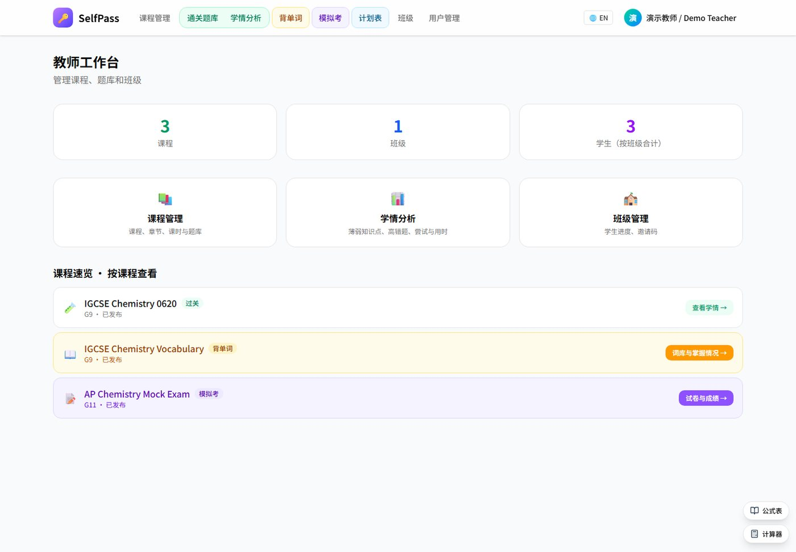
- 课程管理：建课、改章节课时、看题库。Courses: create courses, edit chapters/lessons, open the question bank.
- 学情分析：看薄弱知识点、易错题、学生尝试与用时。Analytics: weak knowledge points, hard questions, attempts and time.
- 班级管理：学生进度与邀请码。Classes: student progress and invite codes.
- 右下角常驻公式表和计算器，任何页面都能用（见第 11 节）。The floating Formula Sheet and Calculator at the bottom right are available on every page (see section 11).
3课程管理Course management
平台有三类课程，创建时选定后不能更改类型：
There are three course types. The type is fixed once the course is created:
🧪 过关课程 Gate Course🧪 Gate Course
常规教学主线：课程 → 章节 → 课时 → 知识点/题库 → 通关测试。学生必须通过当前课时，才能解锁下一课时。
The main teaching ladder: course → chapter → lesson → knowledge points/questions → gate test. A student must pass the current lesson before the next one unlocks.
📖 背单词课程 Vocabulary Course📖 Vocabulary Course
按课时维护专业词汇，学生用卡片、列表学习，再做拼写/选择/释义测验。
Maintain key terms per lesson; students study with cards or lists and take spelling, choice, or meaning quizzes.
📝 模拟考课程 Mock Course📝 Mock Course
限时套题训练。必须绑定一门过关课程，试卷题目的“所属章节课时”直接来自那门课。
Timed practice papers. It must bind to a Gate Course; each paper question inherits its chapter/lesson from that course.
共享规则 SharingSharing
课程默认只有创建者可见。可以添加协作者，让其他教师一起编辑。
By default only the owner can see a course. Add collaborators so other teachers can edit it too.
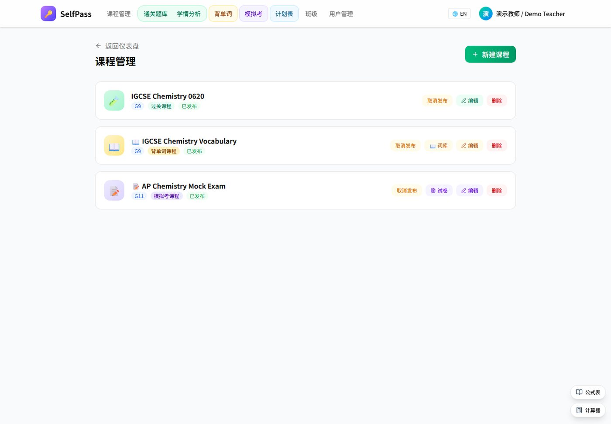
3.1 新建课程3.1 Create a course
- 进入「课程管理」，点右上角新建课程。Open Courses and click New Course.
- 填写课程名称、学科（语文/数学/英语/二外/物理/化学/生物/人文）、年级、说明和图标。Enter the course name, subject, grade, description, and icon.
- 选择类型。若选模拟考课程，必须同时选择要绑定的过关课程。Choose the type. For a Mock Course, also choose the Gate Course to bind.
- 创建后进入课程详情，点发布，学生才能看到。Open the course and click Publish so students can see it.
3.2 章节与课时3.2 Chapters and lessons
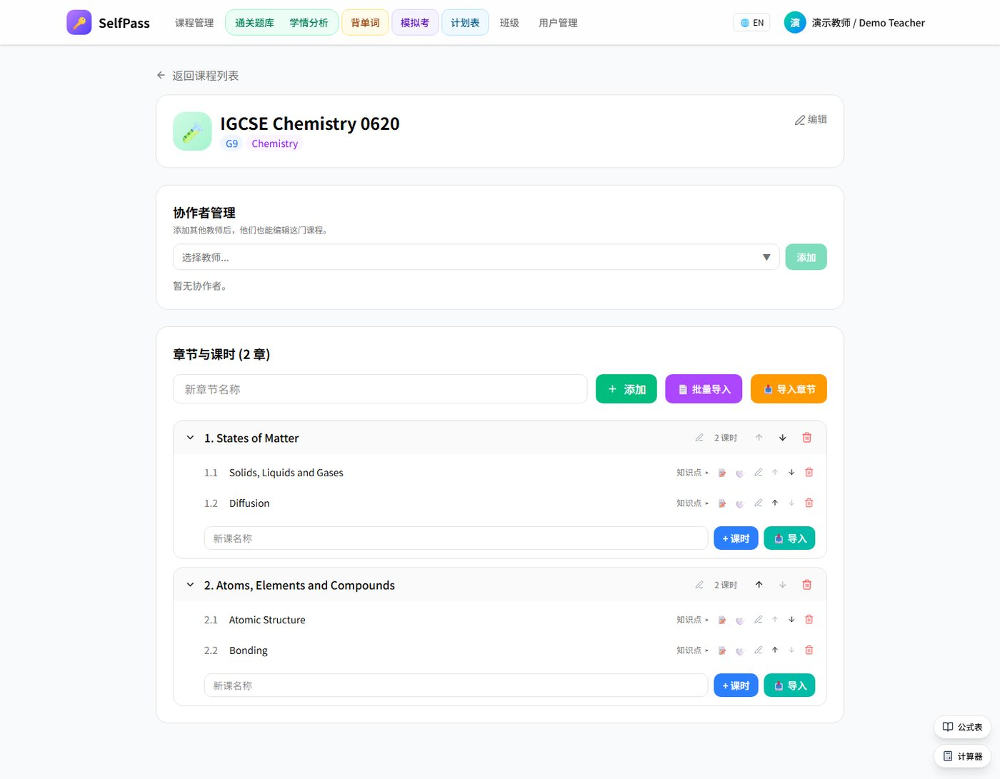
- 添加章节：在输入框写章节名，点「+ 添加」。Add chapter: type a name and click + Add.
- 添加课时：展开章节，在底部输入课时名，点「+ 课时」。Add lesson: expand a chapter, type the name at the bottom, and click + Lesson.
- 排序：用章节/课时右侧的 ↑ ↓ 箭头调整顺序。Reorder: use the ↑ ↓ arrows.
- 改名/删除：用铅笔和垃圾桶图标。Rename/delete: use the pencil and trash icons.
- 批量导入：用 Markdown 粘贴
# 章节名和## 课时名，一次生成整门课的结构。Batch import: paste Markdown with# Chapterand## Lessonlines to create the whole structure at once. - 导入章节/课时：从你的其他课程复制现成内容，再改改即可。Import chapter/lesson: copy existing content from another course and adjust it.
3.3 知识点3.3 Knowledge points
点课时右侧的「知识点 ▸」添加。每个知识点可以写 Markdown 说明、粘贴图片、添加 PDF 和视频链接；编辑窗口右侧会实时预览学生看到的样子。
Click Knowledge points on a lesson to add them. Each point supports a Markdown description, pasted images, a PDF, and video links; the editor previews the student view live.
4题库与 AI 出题Question bank & AI generation
「通关题库」按课程 → 章节 → 课时浏览和编辑题目。每道题显示难度、正确率和作答次数。
Gate Bank browses and edits questions by course → chapter → lesson. Each question shows difficulty, correct rate, and attempt count.
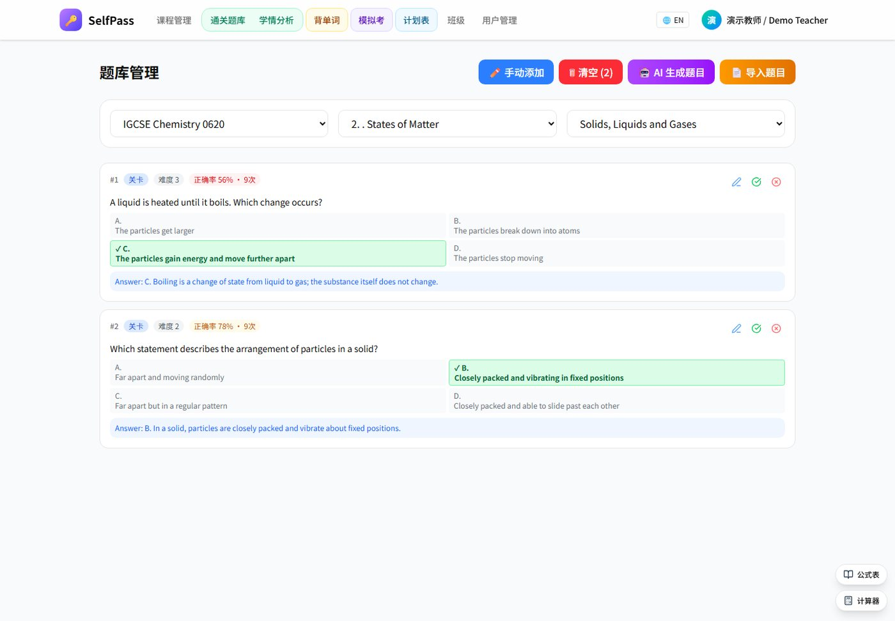
4.1 手动添加题目4.1 Add a question manually
- 选好课程、章节、课时，点✏️ 手动添加。Select the course, chapter, and lesson, then click Add Manually.
- 填写题干、4 个选项、正确答案、解析和难度。题干里的化学式可用 LaTeX（如
$H_2O$）。Fill in the stem, four options, the correct answer, explanation, and difficulty. LaTeX is supported, e.g.$H_2O$. - 图片可以直接在题干框里 Ctrl+V 粘贴，系统会自动压缩到 1MB 以下。Paste images directly into the stem box with Ctrl+V; they are compressed below 1MB automatically.
- 保存后可在列表里编辑或删除。Save, then edit or delete it from the list.
4.2 AI 智能出题4.2 AI question generation
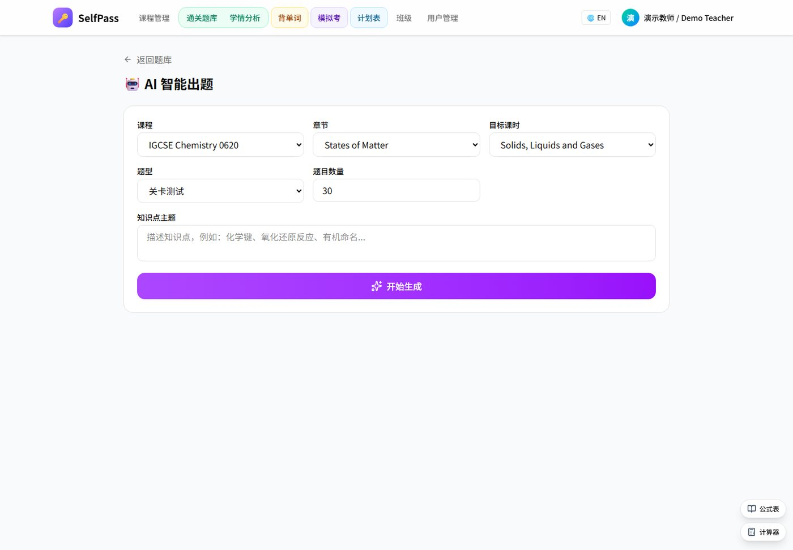
- 进入「通关题库」→ 🤖 AI 生成题目（或顶部导航的「AI 生成」入口）。Open Gate Bank → AI Generate.
- 依次选择课程、章节、目标课时。Select the course, chapter, and target lesson.
- 设置题型、题目数量和主题（可选）。主题越具体，题目越贴合。Set the question type, count, and optional topic. A specific topic produces better questions.
- 点开始生成。生成结果显示在页面上，确认后保存到题库。Click Generate, review the result, then save it to the question bank.
4.3 清空课时题目4.3 Clear a lesson
课时右上角的「🗑 清空」会删除该课时的全部题目和历史作答记录，且不可恢复。只想删一道题时，用该题右侧的删除按钮。
Clear deletes every question in the lesson plus its answer history, and cannot be undone. To remove one question, use the delete button on that row.
5导入题目Import questions
适合把现成的练习、试卷题或 AI 生成的文本一次性变成结构化题目。
Turn existing exercises, paper questions, or AI-generated text into structured questions in one go.
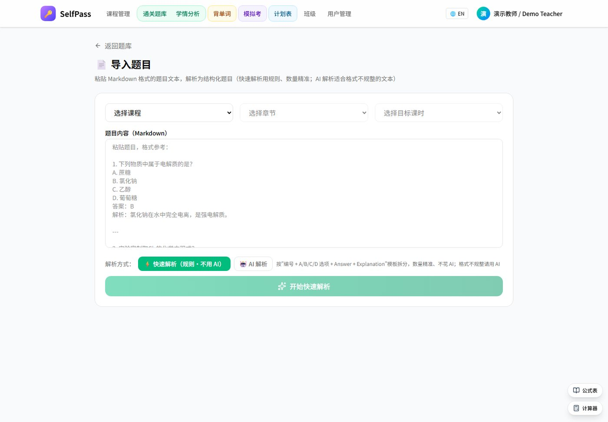
5.1 推荐的文本格式5.1 Recommended format
1. Which substance is an electrolyte?
A. Sucrose
B. Sodium chloride
C. Ethanol
D. Glucose
Answer: B
Explanation: Sodium chloride fully dissociates in water.
---
2. What is the equation for preparing Cl₂ in the lab?
...- 题目之间用
---或空行分隔。Separate questions with---or a blank line. - 选项以
A.B.C.D.开头。Start options withA.B.C.D. - 答案写
Answer: B或答案：B；解析写在后面。WriteAnswer: B(or Chinese答案：B) followed by the explanation. - 公式用 LaTeX；图片可直接粘贴。Use LaTeX for formulas; images can be pasted.
5.2 两种解析方式5.2 Two parsing modes
| 模式Mode | 特点Best for |
|---|---|
| ⚡ 快速解析（规则）⚡ Quick Parse (rules) | 不消耗 AI，速度快、数量准；要求格式比较规整。No AI cost, fast and exact; requires fairly regular formatting. |
| 🤖 AI 解析🤖 AI Parse | 适合格式不规整、选项排版混乱的文本；耗时略长，偶尔需要重试。Handles messy formatting and irregular options; slower and occasionally needs a retry. |
- 选择目标课程、章节和课时。Select the target course, chapter, and lesson.
- 粘贴文本，选择解析方式，点解析。Paste the text, choose a mode, and parse.
- 逐题检查结果（答案、选项、解析），确认后保存。Check each question (answer, options, explanation) and save.
6模拟考Mock exams
限时完整套题：学生开考后倒计时，交卷或超时自动判分。适合期中/期末/AP 等考前训练。
Full timed papers: students get a countdown and are graded on submission or when time runs out. Ideal for midterm/final/AP practice.
6.1 准备6.1 Setup
- 先有一门过关课程，并至少建好章节和课时。You need a Gate Course with at least one chapter and lesson.
- 新建一门模拟考课程，绑定这门过关课程。Create a Mock Course and bind it to that Gate Course.
- 进入「模拟考」或课程列表里的「试卷」。Open Mock Exams or the course's Papers entry.
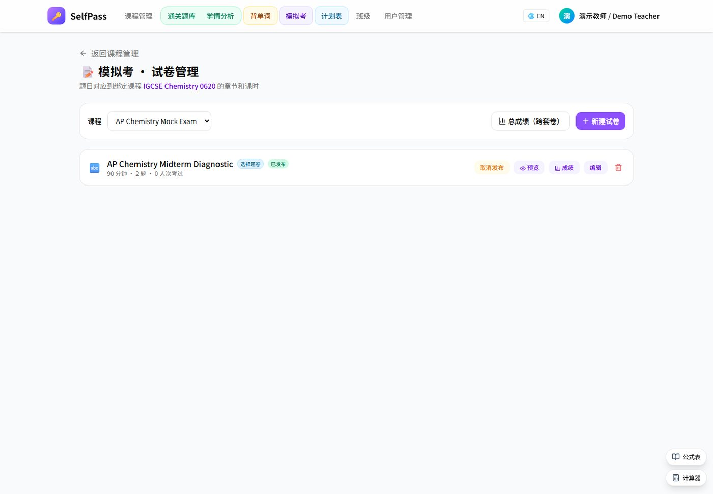
6.2 新建试卷6.2 Create a paper
- 点+ 新建试卷，填写标题和时长（分钟）。Click New Paper, enter a title and duration in minutes.
- 选择卷子类型：选择题卷或简答题卷。一份卷子只能有一种题型，建好后不能改。Choose Multiple choice or Short answer. A paper has one type only, fixed after creation.
- 创建后进入编辑页，录入题目。Open the editor and add questions.
6.3 录入题目：四种方式6.3 Four ways to add questions
📋 粘贴试卷文本📋 Paste paper text
把整份卷子的文字粘进去，AI 自动拆题、标章节课时。
Paste the whole paper; AI splits questions and maps them to chapters/lessons.
☁️ 上传 PDF（MinerU）☁️ Upload PDF (MinerU)
读取 PDF 真实文字层，配图自动提取，准确率最高。免费额度约 1000 页/天。
Reads the real text layer and extracts figures; most accurate. Free quota is about 1,000 pages/day.
🖼️ 上传页面图片🖼️ Upload page images
按页粘贴截图，适合扫描版、拍照版或公式很多的卷子。
Paste page screenshots; best for scanned, photographed, or formula-heavy papers.
✏️ 手动添加✏️ Add manually
逐题录入，适合补题、改题或少量自编题。
Enter questions one by one, ideal for fixes or a few original questions.
PDF 与图片的注意事项PDF and image notes
- PDF 建议优先用「上传 PDF 到 MinerU 解析（更准）」；失败或额度用完时，用「本地转成图片」备用。Prefer Upload PDF to MinerU; if it fails or quota is used up, fall back to Convert locally to images.
- 图片按页顺序上传，一页一张。Upload one image per page, in page order.
- 答案和解析可以在答案框里粘贴文字，也可以截图后 Ctrl+V 粘贴答案图片。Paste answers as text, or screenshot the answer key and Ctrl+V it into the answer box.
- 简答题必须给参考答案：它是 AI 判分的依据；答案写错会导致整题判错。Short-answer questions need a reference answer: AI uses it for grading. A wrong reference answer makes the whole class wrong.
6.4 审题、预览与发布6.4 Review, preview, and publish
- AI 拆题后，逐题检查题干、选项、答案、解析和所标章节课时；不对的直接编辑或删除。After parsing, check each stem, option, answer, explanation, and chapter/lesson mapping; edit or delete anything wrong.
- 点预览看学生端的排版与题号。Click Preview to see the student layout and numbering.
- 确认无误后点发布。未发布的卷子学生完全看不到。Click Publish when ready. Students cannot see an unpublished paper.
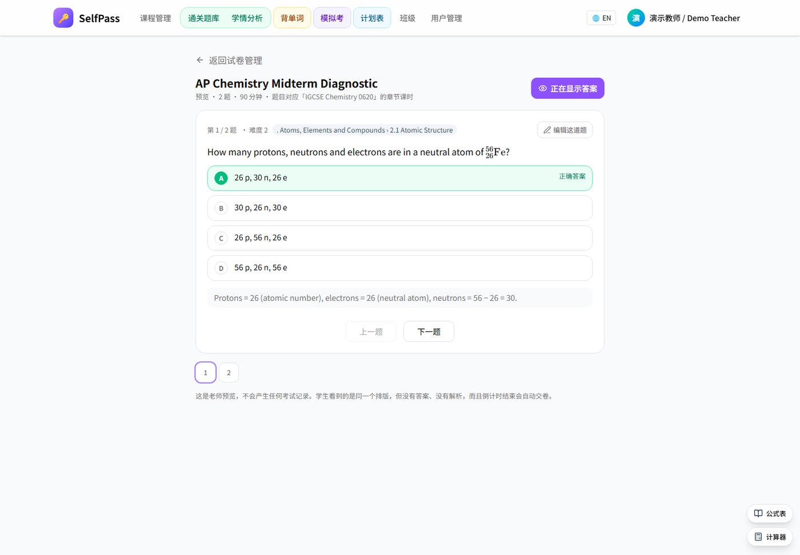
6.5 成绩6.5 Results
点试卷右侧的成绩查看：跨套卷总分、每套卷各次正确率、按班级筛选、学生逐场成绩。同一套卷多次考取最好的一次；点分数能看到该场逐题对错。
Click Results to see cross-paper totals, per-attempt accuracy, class filters, and each student's sessions. For repeat attempts, the best score counts; click a score to see question-by-question results.
7班级管理Classes
班级把学生和课程连起来：学生加入班级后，才能看到班级绑定的课程。
A class links students to courses: students only see courses bound to a class they belong to.
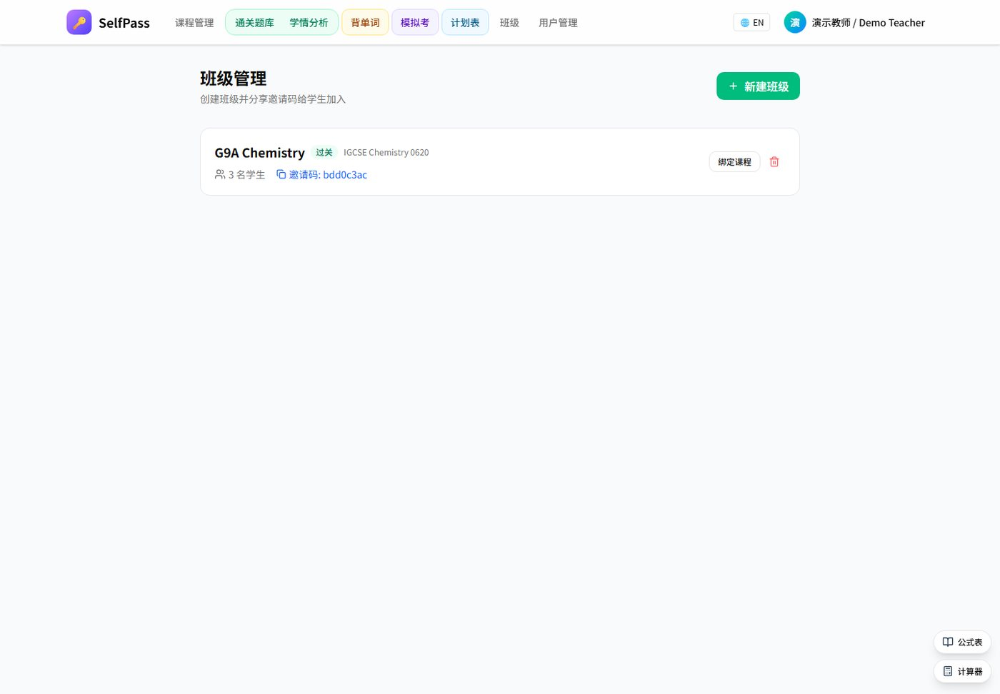
7.1 新建班级7.1 Create a class
- 进入「班级」，点新建班级。Open Classes and click New Class.
- 填写班级名称，建议格式：年份 + 年级 + 课程 + 班号，如
2026 G9 化学A-3班。名称越规范，课表照片自动匹配越准。Use a clear name such as2026 G9 Chemistry A-3. Clear names improve automatic matching when importing a timetable photo. - 选择主课程（通常是过关课程），点创建。Choose the main course (usually the Gate Course) and create.
- 点绑定课程，可再绑一门背单词课程和一门模拟考课程。每类最多一门。Click Bind courses to add one vocabulary course and one mock course. At most one per type.
- 复制邀请码发给学生；学生注册时填写，或之后在班级里手动添加。Share the invite code with students (at registration) or add them manually later.
7.2 学生进度7.2 Student progress
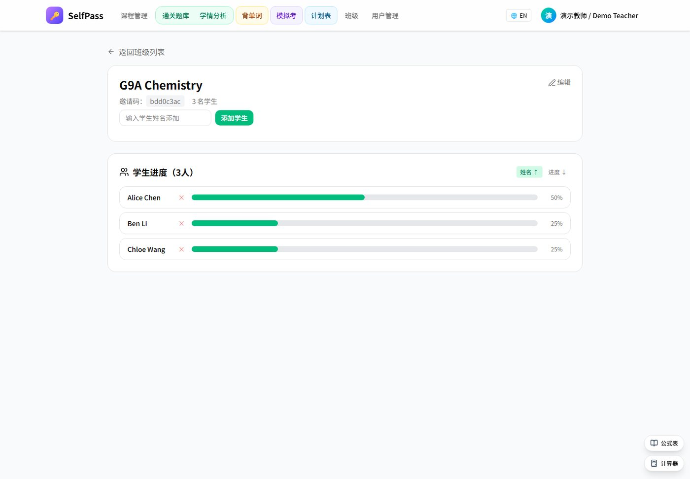
- 添加学生：输入学生姓名（需已有账户）。Add student: enter the name of an existing account.
- 移除学生：点学生右侧的 ✕，会二次确认。Remove: click ✕ next to a student; you will be asked to confirm.
- 班级留言/公告：学生能看到班级公告。Class message: announcements are visible to students.
- 排序：点“姓名”或“进度”表头可切换排序。Sort: click the Name or Progress header.
8学情分析Analytics
看清“哪里薄弱、哪道题最难、谁需要帮助”。可按课程或按班级查看。
See what is weak, which questions are hardest, and who needs help. View by course or by class.
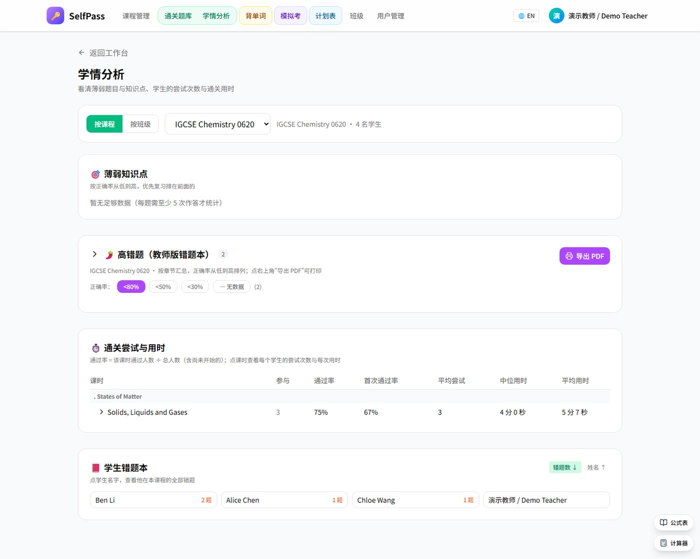
- 按课程 / 按班级切换统计范围；班级视图可再选具体班级。Switch between By course and By class; class view has a class selector.
- 薄弱知识点按正确率从低到高排列。Weak knowledge points are ordered from lowest to highest accuracy.
- 高错题是教师版错题本，按章节汇总，可导出 PDF 用于讲评。Hard questions is the teacher wrong-book, grouped by chapter; export to PDF for review lessons.
- 学生明细：点学生可看其逐题作答；点某场测试可看逐题对错。Student detail: click a student for their answers, or a session for question-level results.
9词汇管理Vocabulary management
按课时维护专业词汇；学生端用卡片、列表学习，再做拼写 / 选择 / 释义测验。
Maintain key terms per lesson; students study with cards or lists and take spelling, choice, or meaning quizzes.
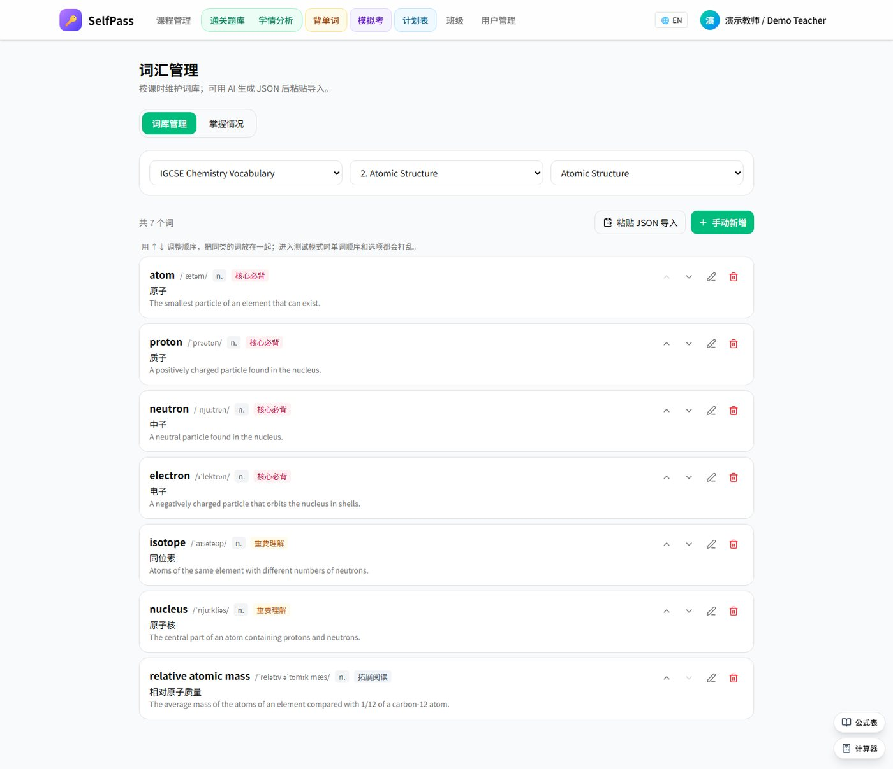
9.1 单个新增与编辑9.1 Add or edit a word
点手动新增或词条右侧的编辑按钮。必填：英文词条、中文释义；可选：音标、词性、英文释义、例句、易错点、配图。
Click Add word or the edit button on a row. Required: term and Chinese meaning. Optional: IPA, part of speech, English definition, examples, notes, and an image.
9.2 批量导入 JSON9.2 Import JSON
点粘贴 JSON 导入，支持数组或 { "words": [...] }；```json 围栏会自动去掉。
Click Import JSON. The top level may be an array or { "words": [...] }; Markdown fences are stripped automatically.
[
{
"term": "isotope",
"ipa": "/ˈaɪsətəʊp/",
"pos": "n.",
"zh": "同位素",
"en_def": "Atoms of the same element with different numbers of neutrons.",
"example_en": "Carbon-12 and carbon-14 are isotopes.",
"note": "注意与 ion 区分",
"difficulty": "重要理解"
}
]只有 term 和 zh 必填。difficulty 可填「核心必背 / 重要理解 / 拓展阅读」，也接受 1/2/3；不填按「重要理解」。
Only term and zh are required. difficulty accepts Core / Important / Extension (or 1/2/3); default is Important.
9.3 顺序与难度9.3 Order and difficulty
- 用 ↑ ↓ 调整顺序，把同类词放在一起；进入测试模式时单词和选项都会打乱。Use ↑ ↓ to group related words; test modes shuffle both words and options.
- 难度三档：核心必背（必须会拼会解释）、重要理解（认得并理解）、拓展阅读（见过即可）。Three levels: Core (spell and explain), Important (recognise and understand), Extension (recognise only).
- 掌握情况标签页看班级/学生的掌握度与测验数据。The Mastery tab shows class/student mastery and quiz data.
10计划表Schedule
类似日历的教师工作周计划：周一至周日 × 13 节，支持每周重复和仅这一次的安排、完成勾选与目标规划。
A calendar-like weekly work plan: Mon–Sun × 13 periods, with weekly and one-off entries, done ticks, and goal planning.
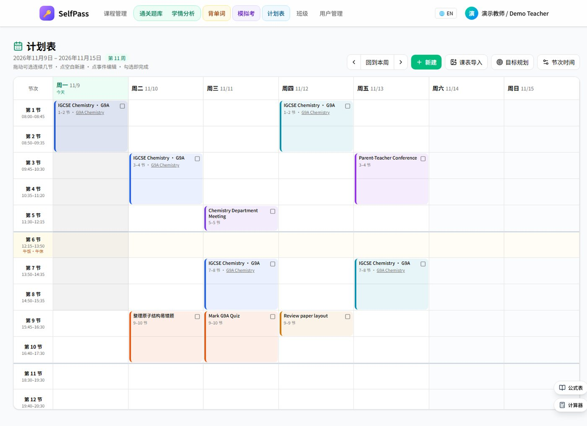
10.1 新建与编辑安排10.1 Create and edit entries
- 在空白格上拖动选择连续节次，或点+ 新建。Drag across empty cells or click New.
- 填写标题、类型（课程 / 任务 / 会议 / 其他）、周期（每周重复 / 仅这一次）、星期或日期、起止节次和备注。Enter the title, type (class / task / meeting / other), repeat (weekly / one-off), weekday or date, periods, and notes.
- 可绑定班级。课程类安排会显示班级名，并链接到班级页面。Optionally bind a class. Class entries show the class name and link to the class page.
- 保存。删除每周重复的安排时，可选择只删这一次或删除整个系列。Save. For a weekly entry you can delete one occurrence or the whole series.
- 勾选完成：只影响这一次，下周同一节不会自动划掉。Tick done: affects this occurrence only; next week's is unaffected.
- 颜色：课程、任务、会议、其他各有独立色池，一眼可辨。Colours: classes, tasks, meetings, and other have separate palettes.
- 过去时段会自动变灰。Past periods are greyed out automatically.
- 上一周 / 下一周 / 回到本周切换周次。Previous / Next / This week navigate weeks.
10.2 从课表照片导入10.2 Import a timetable photo
- 点课表导入，选择一张课表照片或截图。Click Import timetable and choose a photo or screenshot.
- AI 识别通常需要 10–30 秒，并按名称自动匹配你的班级。AI recognition takes about 10–30 seconds and auto-matches your classes by name.
- 识别结果会直接写入计划表。请逐格核对课程名称、星期和节次；有错可直接点开修改或删除。Results are written directly into the schedule. Check every cell's name, weekday, and periods; edit or delete mistakes.
- 如果整份都不对，点撤销本次导入。If the whole import is wrong, click Undo this import.
10.3 目标规划10.3 Goal planning
- 点目标规划 → 新建目标。Click Goals → New goal.
- 填写目标、周期（本周 / 本月 / 本学期）、截止日期和补充说明（如“只安排工作日”）。Enter the goal, horizon (week / month / term), due date, and notes (e.g. “weekdays only”).
- 点AI 拆解。AI 会避开已有课程和午饭节次，给出 3–16 个步骤及建议日期。Click AI breakdown. AI avoids existing classes and lunch, and proposes 3–16 steps with dates.
- 勾选要采纳的步骤，点加入计划表；也可全部取消，只保留目标。Tick the steps to accept and click Add to schedule; or keep only the goal.
目标卡片会显示已完成步骤比例。删除目标不会删除已排进日历的步骤，避免误删已做的工作。
Goal cards show the completed-step ratio. Deleting a goal does not delete steps already placed on the calendar.
10.4 节次时间与学期10.4 Period times and term
点节次时间设置学期第一周周一、学期周数和 13 节的起止时间。默认值为 08:00–21:30，第 6 节为午饭午休。修改后整张表按新时间显示。
Click Period times to set the first Monday, term length, and the start/end time of all 13 periods. Defaults run 08:00–21:30 with period 6 as lunch.
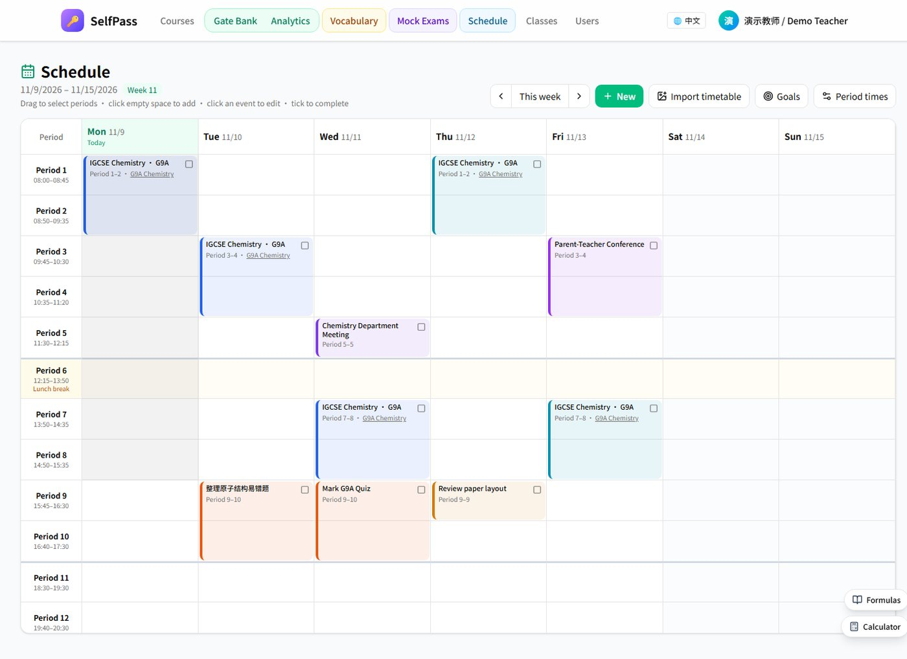
11公式表与计算器Formula sheet & calculator
右下角常驻两个悬浮按钮，所有登录用户都能用，考试期间也始终可用。
Two floating buttons at the bottom right are available to every signed-in user, including during exams.
📋 公式表📋 Formula sheet
- 元素周期表：悬停/点击查看元素名称、相对原子质量、类别。Periodic table: view element names, relative atomic mass, and category.
- 常量：气体常数、阿伏伽德罗常数等。Constants: gas constant, Avogadro constant, and more.
- 常用公式与常见离子。Common equations and ions.
- 不限于化学，其他学科也可打开使用。Not limited to chemistry; usable in other subjects too.
🧮 计算器🧮 Calculator
- 支持 + − × ÷、括号、sin/cos/tan、log/ln、√、x²、xʸ、π、e、± 和百分比。Supports + − × ÷, parentheses, sin/cos/tan, log/ln, √, x², xʸ, π, e, ±, and percent.
- 内置安全解析器，不使用 eval，可放心在考试中使用。Built-in safe parser (no eval), safe to use during exams.
- 点 ✕ 或再次点悬浮按钮关闭。Close with ✕ or by clicking the floating button again.
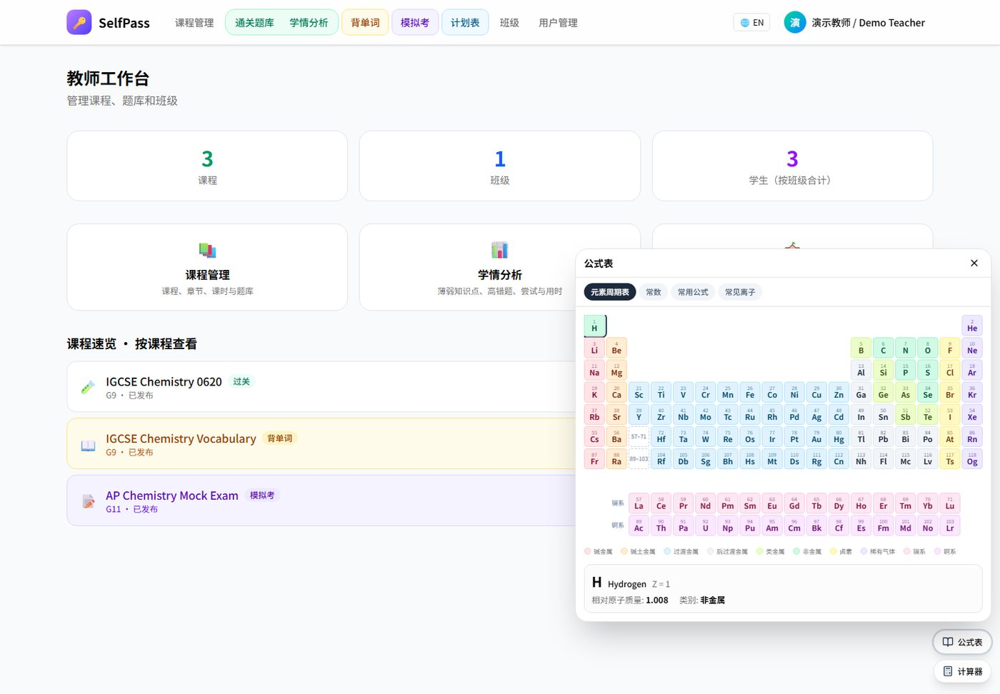
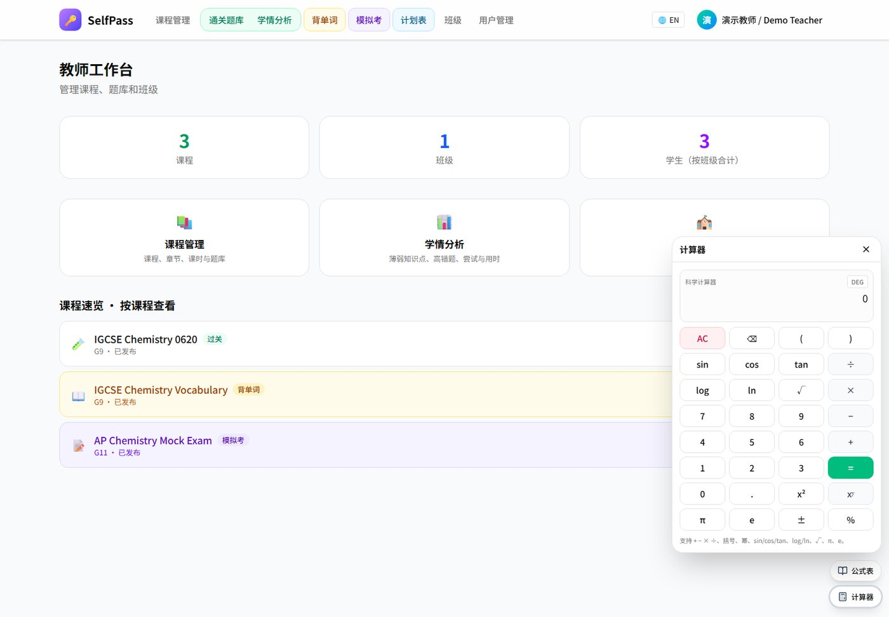
12设置与语言Settings & language
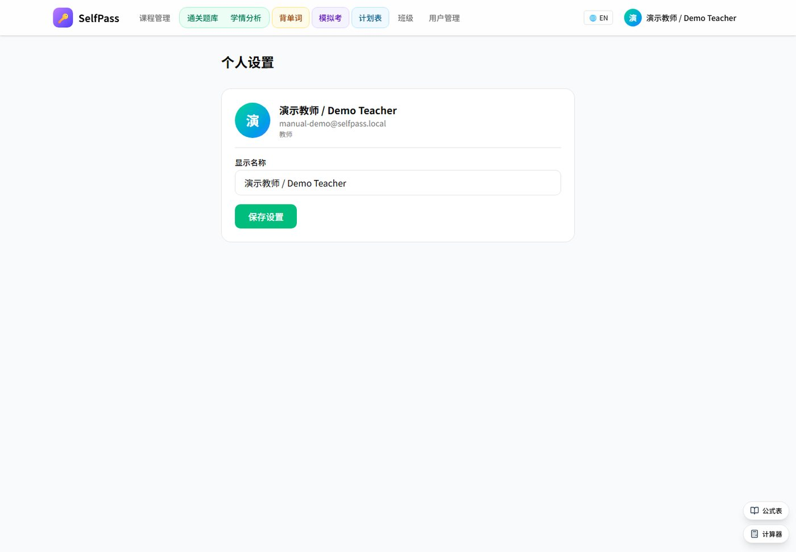
- 显示名称会出现在导航栏、班级名单和成绩表中，改完点保存。The display name appears in the navbar, class lists, and results; save after editing.
- 语言切换：导航栏右上角的地球按钮。中文界面显示“EN”，英文界面显示“中文”。Language: the globe button at the top right. It shows “EN” in Chinese and “中文” in English.
- 切换后所有页面、按钮、提示和 AI 生成内容都会跟随语言，刷新后仍保持。All pages, buttons, messages, and AI output follow the selected language and persist after reload.
- 修改密码：退出登录后，在登录页点「忘记密码？」按邮件重置。Change password: sign out, then use Forgot password? on the login page.
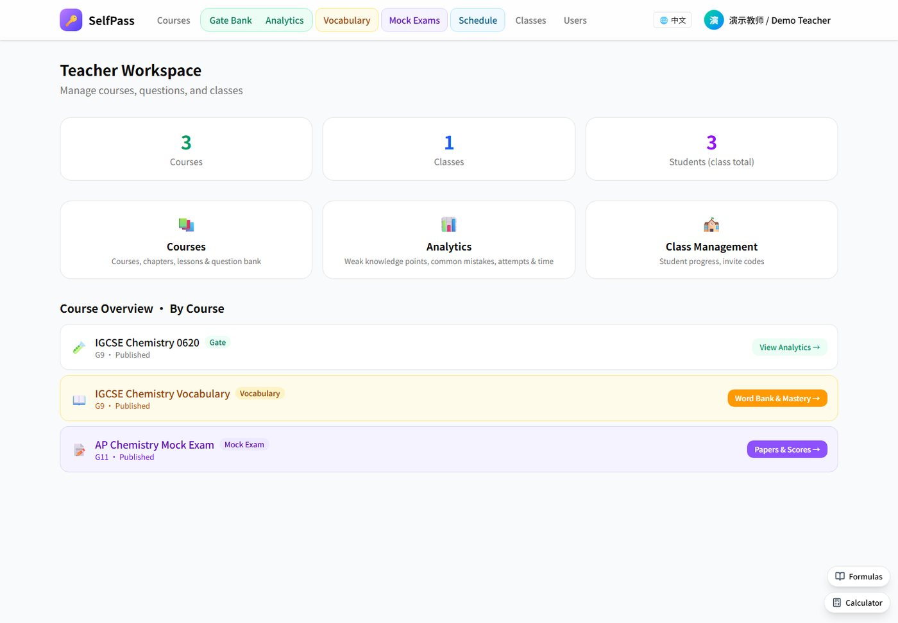
13管理员功能Admin features
仅管理员账号可见，普通教师访问会提示“暂无访问权限”。
Visible to admins only; teachers see a “No access” message.
进入顶部导航的用户管理：可以搜索/筛选全部、教师、学生、管理员；修改用户角色；删除用户。删除用户会连同其学习记录一起移除，操作前请确认。
Open Users in the top navigation to search and filter all/teacher/student/admin accounts, change roles, and delete users. Deleting a user also removes their learning records, so confirm first.
14常见问题FAQ
学生看不到课程怎么办？A student cannot see a course
依次检查：① 课程是否已发布；② 班级是否绑定了这门课程；③ 学生是否已加入该班级。三者缺一不可。
Check in order: (1) is the course published, (2) is the course bound to the class, (3) is the student in that class. All three are required.
学生看不到模拟考卷子？Students cannot see a mock paper
试卷默认未发布。在「模拟考」里点卷子上的发布；同时确认班级已绑定这门模拟考课程。
Papers start unpublished. Click Publish on the paper, and make sure the class is bound to the mock course.
想改一份已经有人考过的卷子？Editing a paper students have already taken
已有作答记录时不能直接更新原卷。用另存为新试卷，修改后发布新卷；旧成绩仍对应旧卷。
A paper with attempts cannot be updated in place. Use Save as new paper, edit, and publish the new one; old results stay with the old paper.
AI 生成或解析失败？AI generation or parsing fails
多为临时超时或调用失败，直接重试即可；解析长文本时建议分批。若持续失败，联系管理员检查 DeepSeek 额度与密钥。
Most failures are transient timeouts; retry. Split long texts into batches. If it keeps failing, ask the administrator to check the DeepSeek key and quota.
上传图片提示太大？Image is too large
系统会自动压缩到 1MB 以下。若仍失败，先把图片裁小或转成 JPEG 再上传。
Images are compressed below 1MB automatically. If it still fails, crop or convert to JPEG first.
MinerU（PDF 解析）报错？MinerU (PDF parsing) errors
常见原因：免费额度用完（约 1000 页/天）、token 过期（90 天）、文件过大或页数过多、网络取不到文件。可改用「本地转成图片」备用；token 问题请联系管理员更新环境变量。
Common causes: daily quota used up (~1,000 pages/day), expired token (90 days), file too large/too many pages, or the file cannot be fetched. Use “Convert locally to images” as a fallback; contact the administrator for token issues.
学情分析显示“暂无数据”？Analytics shows “no data”
需要学生实际做过通关测试；正确率统计还要求每题至少 5 次作答。
Students must actually take gate tests; correct rates additionally require at least 5 answers per question.
课表照片识别不准？Timetable photo is inaccurate
导入后逐格检查并直接修改；整份错误可点「撤销本次导入」。使用清晰、正向、无遮挡的照片效果最好。
Check each cell after import and edit mistakes; use Undo this import if the whole result is wrong. Clear, upright, unobstructed photos work best.
数据会丢吗？Can data be lost?
数据保存在云端数据库。删除课程、题目、用户等操作不可恢复；重要资料建议定期备份（例如导出 PDF 或保存原始文件）。
Data lives in the cloud database. Deleting courses, questions, or users cannot be undone; keep backups of important material (PDF exports or original files).
推荐用什么浏览器？Which browser should I use?
最新版 Chrome 或 Edge。平板和手机也能用，但建课、导入试卷等复杂操作建议在电脑上完成。
The latest Chrome or Edge. Tablets and phones work, but complex tasks such as course building and paper import are best on a computer.
★附：推荐工作流Appendix: recommended workflow
开学前Before term
- 建好过关课程的结构（章节 → 课时）。Build the Gate Course structure (chapters → lessons).
- 导入或生成每个课时的题目与词汇。Import or generate questions and vocabulary per lesson.
- 建班、绑定课程、准备邀请码。Create classes, bind courses, prepare invite codes.
- 在计划表里录入课表并设置学期。Enter the timetable and term settings.
每周Each week
- 看学情分析的薄弱点和高错题。Review weak points and hard questions in Analytics.
- 针对错题补讲或补题。Reteach or add questions for the hard items.
- 计划表勾选完成，调整下周安排。Tick off the schedule and plan next week.
- 需要检测时，建模拟卷 → 审题 → 发布。For assessment: create a mock paper → review → publish.
术语对照Glossary
| 中文Chinese | EnglishEnglish | 说明Meaning |
|---|---|---|
| 过关课程 | Gate Course | 带通关测试的常规课程A normal course with gate tests |
| 课时 | Lesson | 章节下最小的学习单元The smallest learning unit under a chapter |
| 知识点 | Knowledge point | 课时内的讲解、图片、PDF 和视频Explanations, images, PDFs, and videos inside a lesson |
| 通关测试 | Gate test | 通过后才解锁下一课时Passing unlocks the next lesson |
| 模拟考课程 | Mock course | 绑定过关课程、存放限时套题Binds a Gate Course and holds timed papers |
| 背单词课程 | Vocabulary course | 按课时管理专业词汇Key terms managed per lesson |